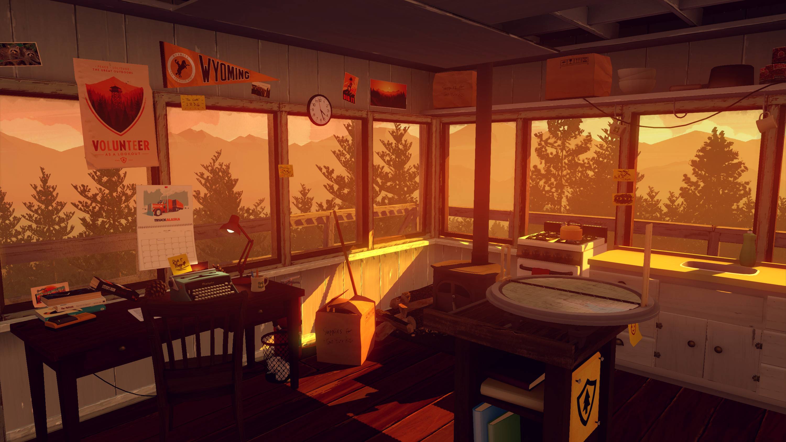
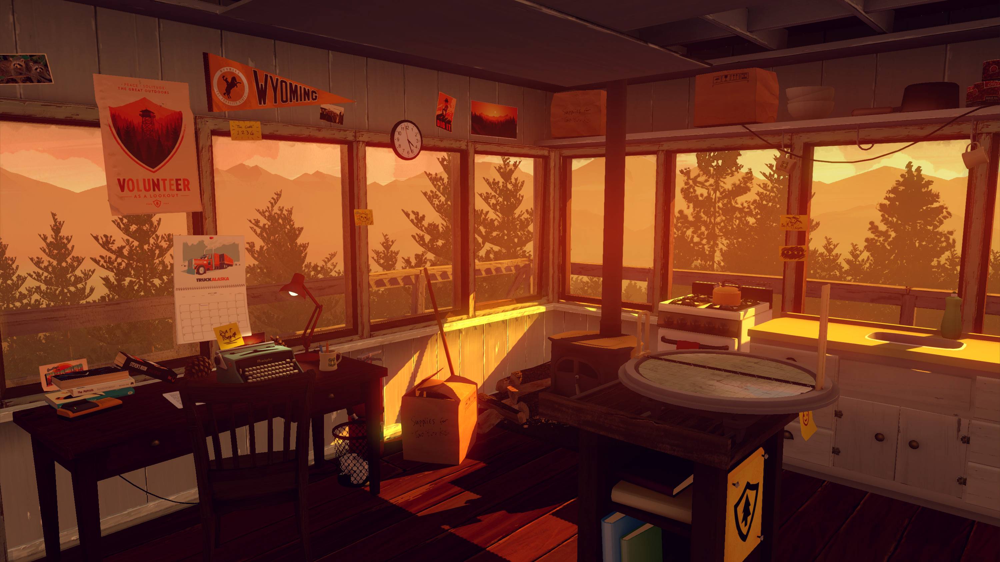
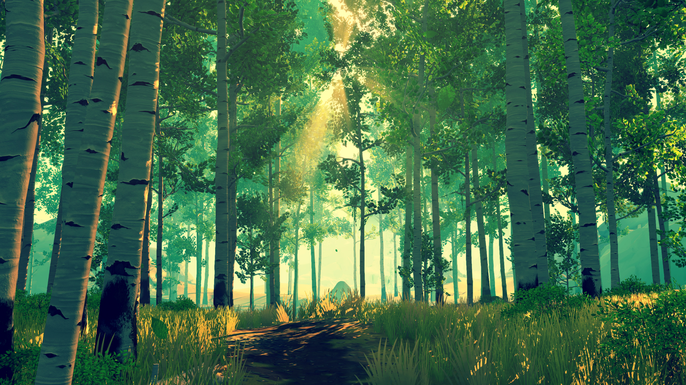
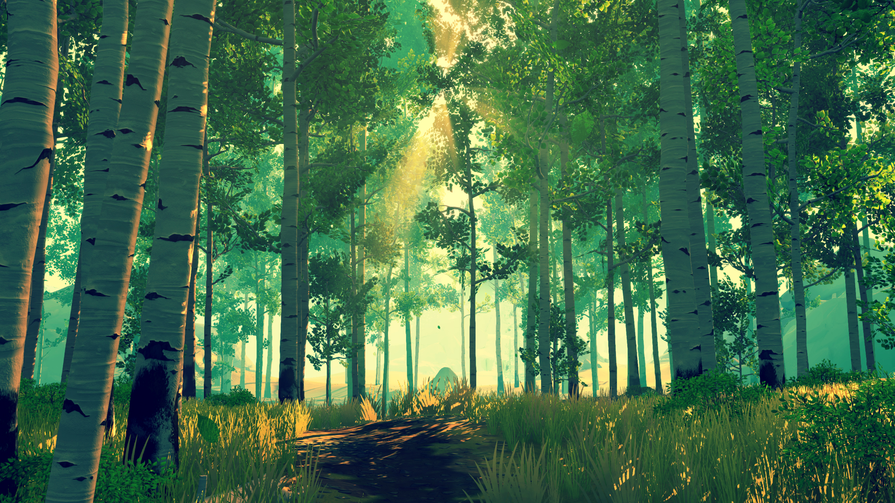

AVAILABLE NOW FOR $19.99
 WINDOWS / MAC / LINUX
WINDOWS / MAC / LINUX
 NINTENDO SWITCH
NINTENDO SWITCH
 PLAYSTATION 4
PLAYSTATION 4
 XBOX ONE
XBOX ONE
Firewatch is a mystery set in the Wyoming wilderness, where your only emotional lifeline is the person on the other end of a handheld radio.
The year is 1989. You are a man named Henry who has retreated from your messy life to work as a fire lookout in the Wyoming wilderness. Perched atop a mountain, it's your job to find smoke and keep the wilderness safe. An especially hot, dry summer has everyone on edge. Your supervisor, a woman named Delilah, is available to youat all times over a small, handheld radio—and is your only contact with the world you've left behind. But when something strange draws you out of your lookout tower and into the world below, you'll explore a wild and unknown environment, facing questions and making interpersonal choices that can build or destroy the only meaningful relationship you have.
 

 
